- 00 开篇词 为什么你要学习etcd_.md.html
- 01 etcd的前世今生：为什么Kubernetes使用etcd？.md.html
- 02 基础架构：etcd一个读请求是如何执行的？.md.html
- 03 基础架构：etcd一个写请求是如何执行的？.md.html
- 04 Raft协议：etcd如何实现高可用、数据强一致的？.md.html
- 05 鉴权：如何保护你的数据安全？.md.html
- 06 租约：如何检测你的客户端存活？.md.html
- 07 MVCC：如何实现多版本并发控制？.md.html
- 08 Watch：如何高效获取数据变化通知？.md.html
- 09 事务：如何安全地实现多key操作？.md.html
- 10 boltdb：如何持久化存储你的key-value数据？.md.html
- 11 压缩：如何回收旧版本数据？.md.html
- 12 一致性：为什么基于Raft实现的etcd还会出现数据不一致？.md.html
- 13 db大小：为什么etcd社区建议db大小不超过8G？.md.html
- 14 延时：为什么你的etcd请求会出现超时？.md.html
- 15 内存：为什么你的etcd内存占用那么高？.md.html
- 16 性能及稳定性（上）：如何优化及扩展etcd性能？.md.html
- 17 性能及稳定性（下）：如何优化及扩展etcd性能_.md.html
- 18 实战：如何基于Raft从0到1构建一个支持多存储引擎分布式KV服务？.md.html
- 19 Kubernetes基础应用：创建一个Pod背后etcd发生了什么？.md.html
- 20 Kubernetes高级应用：如何优化业务场景使etcd能支撑上万节点集群？.md.html
- 21 分布式锁：为什么基于etcd实现分布式锁比Redis锁更安全？.md.html
- 22 配置及服务发现：解析etcd在API Gateway开源项目中应用.md.html
- 23 选型：etcd_ZooKeeper_Consul等我们该如何选择？.md.html
- 24 运维：如何构建高可靠的etcd集群运维体系？.md.html
- 特别放送 成员变更：为什么集群看起来正常，移除节点却会失败呢？.md.html
- 结束语 搞懂etcd，掌握通往分布式存储系统之门的钥匙.md.html
- 捐赠
特别放送 成员变更：为什么集群看起来正常，移除节点却会失败呢？
你好，我是王超凡，etcd项目贡献者，腾讯高级工程师。目前我主要负责腾讯公有云大规模Kubernetes集群管理和etcd集群管理。
受唐聪邀请，我将给你分享一个我前阵子遇到的有趣的故障案例，并通过这个案例来给你介绍下etcd的成员变更原理。
在etcd的日常运营过程中，大部分同学接触到最多的运维操作就是集群成员变更操作，无论是节点出现性能瓶颈需要扩容，还是节点故障需要替换，亦或是需要从备份来恢复集群，都离不开成员变更。
然而如果你对etcd不是非常了解，在变更时未遵循一定的规范，那么很容易在成员变更时出现问题，导致集群恢复时间过长，进而造成业务受到影响。今天这节课，我们就从一次诡异的故障说起，来和你聊聊etcd成员变更的实现和演进，看看etcd是如何实现动态成员变更的。希望通过这节课，帮助你搞懂etcd集群成员管理的原理，安全的变更线上集群成员，从容的应对与集群成员管理相关的各类问题。
从一次诡异的故障说起
首先让我们来看一个实际生产环境中遇到的案例。
某天我收到了一个小伙伴的紧急求助，有一个3节点集群，其中一个节点发生了故障后，由于不规范变更，没有先将节点剔除集群，而是直接删除了数据目录，然后重启了节点。
之后该节点就不停的panic，此时其他两个节点正常。诡异的是，此时执行member remove操作却报错集群没有Leader，但是用endpoint status命令可以看到集群是有Leader存在的。更加奇怪的是，过了几个小时后，该节点又自动恢复了（如下图）。
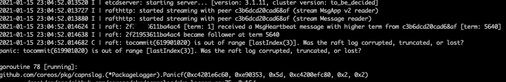
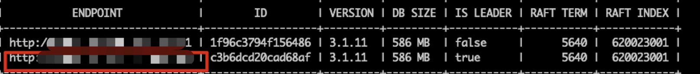
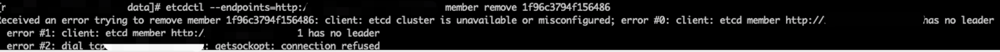
你可以先自己思考下，可能是什么原因导致了这几个问题？有没有办法能够在这种场景下快速恢复集群呢？
如果暂时没什么思路，不要着急，相信学完这节课的成员变更原理后，你就能够独立分析类似的问题，并快速地提供正确、安全的恢复方式。
静态配置变更 VS 动态配置变更
接下来我们就来看下，要实现成员变更，都有哪些方案。
最简单的方案就是将集群停服，更新所有节点配置，再重新启动集群。但很明显，这个方案会造成变更期间集群不可用。对于一个分布式高可用的服务来说，这是不可接受的。而且手工变更配置很容易因为人为原因造成配置修改错误，从而造成集群启动失败等问题发生。
既然将所有节点同时关闭来更新配置我们无法接受，那么我们能否实现一个方案，通过滚动更新的方式增删节点来逐个更新节点配置，尽量减少配置更新对集群的影响呢？zookeeper 3.5.0之前就是采用的这个方案来降低配置更新对集群可用性的影响。
但这种方案还是有一定的缺点。一是要对存量节点配置进行手动更新，没有一个很好的校验机制，如果配置更新错误的话很容易对集群造成影响。二是滚动更新配置的过程中节点要进行重启，存量的连接要断开重连。在连接数和负载较高的场景下，大量连接重连也会对集群稳定性造成一定的影响。
针对这两个问题，有没有进一步的优化空间呢？作为程序员，我们的目标肯定是要尽量消除人工操作，将手工操作自动化，这样才能避免人为错误。
那么我们能否能够在配置实际应用之前，通过程序来做好一系列的检查工作，当所有检查通过后，再实际应用新的配置呢？同样，为了避免重启节点，我们能否通过API和共识算法，将新的配置动态同步到老的节点呢？
etcd目前采用的正是上面这种实现方式。它将成员变更操作分为了两个阶段（如下图）：
- 第一个阶段，通过API提交成员变更信息，在API层进行一系列校验，尽量避免因为人为原因造成的配置错误。如果新的配置通过校验，则通过Raft共识算法将新的配置信息同步到整个集群，等到整个集群达成共识后，再应用新的配置。
- 第二个阶段，启动新的节点，并实际加入到集群中（或者移除老的节点，然后老节点自动退出）。
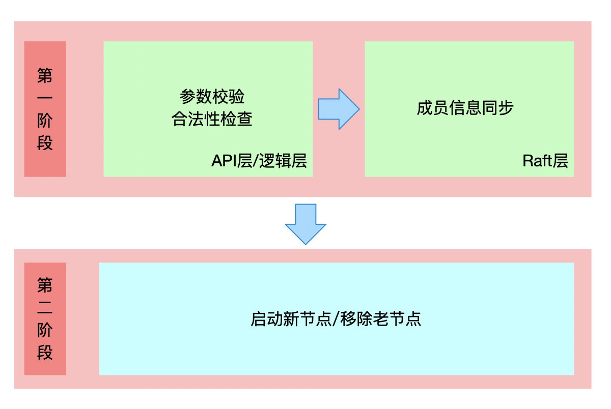
接下来我们就先来看下。etcd如何基于Raft来实现成员信息同步。
如何通过Raft实现成员信息同步
成员变更流程
在04节课中，我们已经了解到，Raft将一致性问题拆分成了3个子问题，即Leader选举、日志复制以及安全性。基于日志复制，我们可以将成员变更信息作为一个日志条目，通过日志同步的方式同步到整个集群。那么问题来了，日志同步后，我们应该什么时候应用新的配置呢，直接应用新的配置会造成什么问题吗？
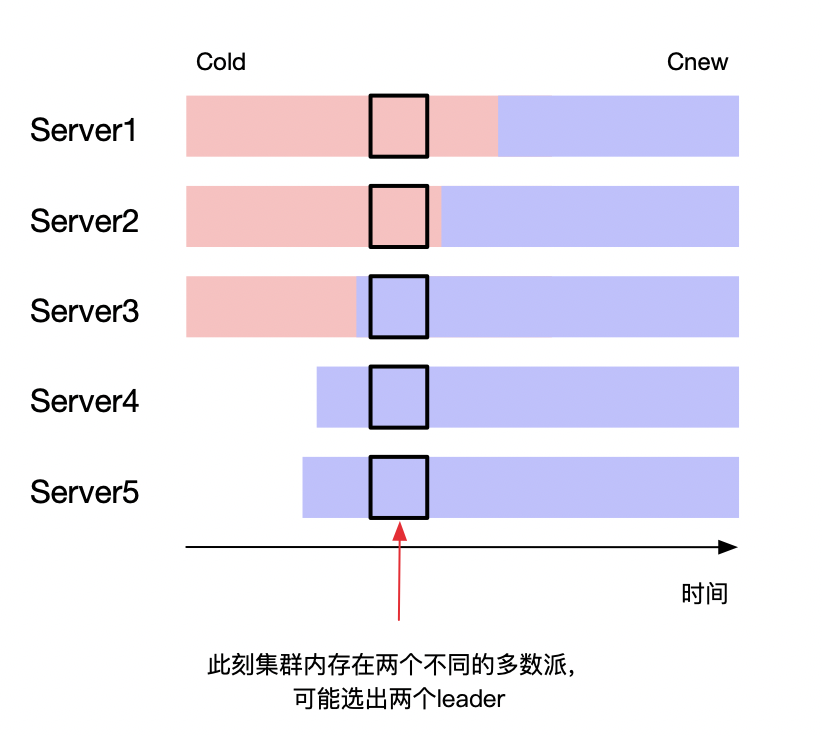
如上图所示（参考自Raft论文），当我们将3个节点集群扩展到5个节点的时候，我们可以看到，对于老的3节点配置来说，它的多数派是2个节点。而对于新的5节点配置集群来说，它的多数派是3个节点。
在箭头指向的时刻，新老配置同时生效，老的配置中Server1和Server2组成了多数派，新的配置中Server3、Server4、Server5组成了新的多数派。此时集群中存在两个多数派，可能会选出两个Leader，违背了安全性。
那么有没有方式能避免这个问题，保证变更的安全性呢？一方面我们可以引入两阶段提交来解决这个问题，另一方面我们可以通过增加一定约束条件来达到目标。如下图所示，当我们一次只变更一个节点的时候我们可以发现，无论是从奇数节点扩缩到偶数节点，还是从偶数节点扩缩到奇数节点，扩缩容前后配置中的多数派必然有一个节点存在交叉（既存在于老的配置的多数派中，也存在于新的配置的多数派中）。
我们知道在Raft里，竞选出的Leader必须获得一半以上节点投票，这就保证了选出的Leader必然会拥有重叠节点的投票。而一个节点在一轮投票中只能投票给一个候选者，这就保证了新老配置最终选出的Leader必然是一致的。
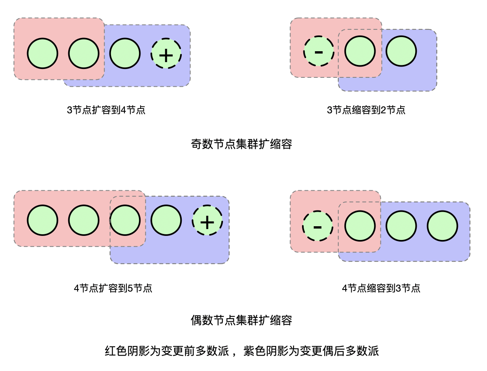
因此，我们通过增加一次只变更一个成员这个约束，就可以得到一个很简单的成员变更实现方式：
- 在一次只变更一个节点的场景下，每个节点只需要应用当前收到的日志条目中最新的成员配置即可（即便该配置当前还没有commit）。
- 在一个变更未结束时，禁止提交新的成员变更。
这样就保证了一个成员变更可以安全地进行，同时在变更的过程中，不影响正常的读写请求，也不会造成老的节点重启，提升了服务的稳定性。
需要注意的是，etcd并没有严格按照Raft论文来实现成员变更，它应用新的配置时间点是在应用层apply时，通知Raft模块进行ApplyConfChange操作来进行配置切换，而不是在将配置变更追加到Raftlog时立刻进行切换。
到目前为止，etcd就完整地实现了一个成员信息同步的流程。如果是扩容的话，接下来只需要启动之前配置的新节点就可以了。
为什么需要Learner
那么这个实现方案有没有什么风险呢？我们一起来分析下。
举个例子，当我们将集群从3节点扩容到4节点的时候，集群的法定票数（quorum）就从2变成了3。而我们新加的节点在刚启动的时候，是没有任何日志的，这时就需要从Leader同步快照才能对外服务。
如果数据量比较大的话，快照同步耗时会比较久。在这个过程中如果其他节点发生了故障，那么集群可用节点就变成了2个。而在4节点集群中，日志需要同步到3个以上节点才能够写入成功，此时集群是无法写入的。
由于法定票数增加，同时新节点同步日志时间长不稳定，从而增大了故障的概率。那么我们是否能通过某种方式来尽量缩短日志同步的时间呢？
答案就是Learner节点（在Raft论文中也叫catch up）。etcd 3.4实现了Leaner节点的能力，新节点可以以Learner的形式加入到集群中。Learner节点不参与投票，即加入后不影响集群现有的法定票数，不会因为它的加入而影响到集群原有的可用性。
Learner节点不能执行写操作和一致性读，Leader会将日志同步给Learner节点，当Learner节点的日志快追上Leader节点时（etcd 3.4 Learner已同步的日志条目Index达到Leader的90%即认为ready），它就成为Ready状态，可被提升为Voting Member。此时将Learner提升为Voting Member，可以大大缩短日志同步时间，降低故障的概率。
另外，由于Learner节点不参与投票，因此即使因为网络问题同步慢也不会影响集群读写性能和可用性，可以利用这个特性来方便的实现异地热备的能力。
联合一致性（joint consensus）
虽然一次添加一个节点在实现上可以降低很大的复杂度，但它同样也有一些缺陷。
例如在跨zone容灾的场景下，假设一个集群有三个节点A，B，C，分别属于不同的zone，你无法在不影响跨多zone容灾能力的情况下替换其中一个节点。假设我们要用同一个zone的D节点来替换C节点（如下图）：
- 如果我们采用先增后减的形式，先将D加到集群中，此时集群节点数变为了4，法定票数变为了3。如果C，D所在的zone挂掉，则集群只剩下两个可用节点，变为不可用状态。
- 如果我们采用先减后增的形式，先将C节点移除，此时集群中剩2个节点，法定票数为2。如果A或者B所在的zone挂掉了，集群同样不可用。
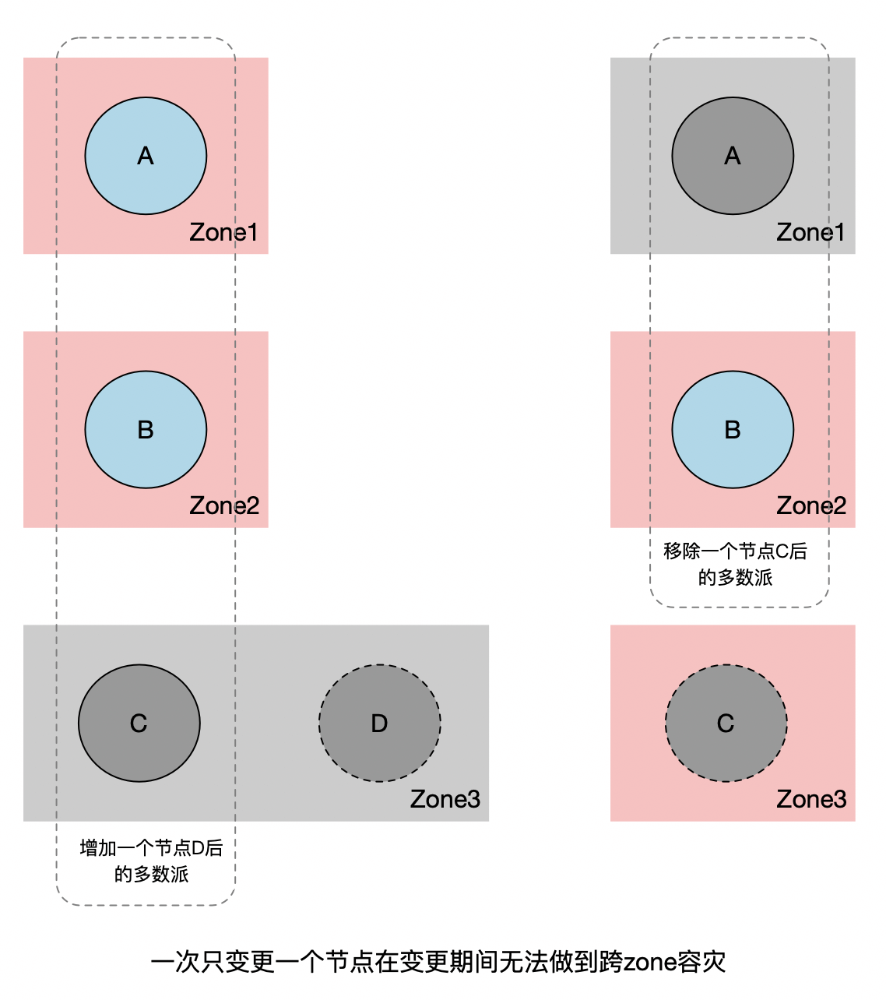
当然，通过Learner节点可以很大程度上降低这个问题发生的概率。但我们如果能够实现多节点成员变更的话，则可以从根本上解决这个问题。
多节点成员变更也是Raft论文中最初提到的实现成员变更的方式，为了保证成员变更的安全性，我们可以通过两阶段提交来实现同时变更多个成员，两阶段提交的实现方式有多种，在Raft中是通过引入一个过渡配置来实现的，即引入联合一致性（joint consensus）来解决这个问题。如下图（引用自Raft论文）所示：
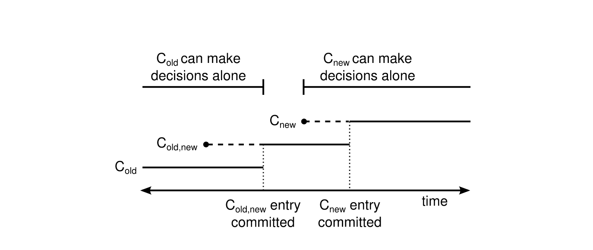
我们可以看到，Raft引入了一个过渡配置：Cold,new。当新的配置提案发起时，Leader会先生成Cold,new状态的配置。当集群处于这个配置时，需要Cold和Cnew的多数派都同意commit，新的提案才能被commit。当Cold,new被commit后，就可以安全切换到新的配置Cnew了，当Cnew被提交后，整个变更操作就完成了。
通过引入joint consensus，我们可以看到不会存在Cold和Cnew同时独立做决定的情况，保证了成员变更的安全性。
进一步推广的话，通过引入joint consensus，我们可以在多个成员变更过程中继续提交新的配置。但这么做不仅会带来额外的复杂度，而且基本上不会带来实际的收益。因此在工程实现上我们一般还是只允许同一时间只能进行一次成员变更，并且在变更过程中，禁止提交新的变更。
etcd 3.4的Raft模块实现了joint consensus，可以允许同时对多个成员或单个成员进行变更。但目前应用层并未支持这个能力，还是只允许一次变更一个节点。它的实现仍然同Raft论文有一定的区别，Raft论文是在配置变更提案追加到Raftlog时就切换配置，而etcd的Raft实现是在apply过程才进行配置切换。当Cold,new配置apply之后，就可以返回给客户端成功了。但此时变更还未完全结束，新的日志条目仍然需要Cold和Cnew多数派都同意才能够提交，Raft模块会通过追加一个空的配置变更条目，将配置从Cold,new切换到Cnew。当Cnew apply后，新的日志条目就只需要Cnew多数派同意即可，整个成员变更信息同步完成。
集群扩容节点完整流程
上边讲完了成员信息同步流程，我们就可以来看下向一个已有集群扩容一个新节点的整体流程是怎样的（整体流程如下图）。
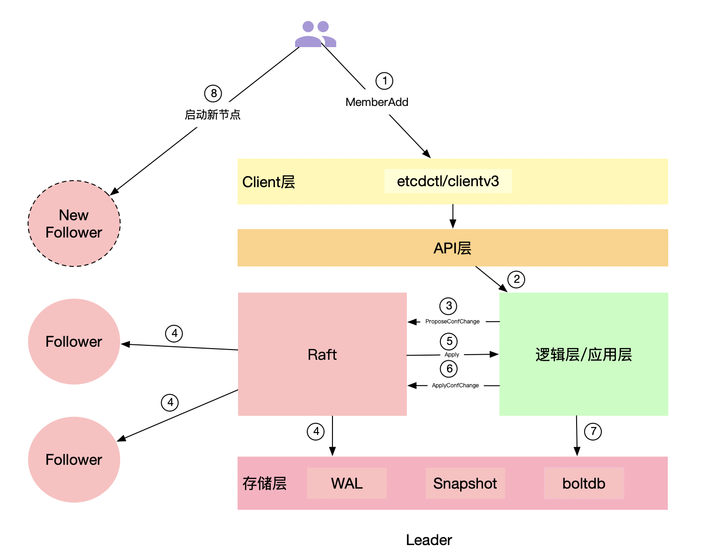
首先，我们可以通过etcdctl或者clientv3库提供的API来向成员管理模块发起一个MemberAdd请求。成员管理模块在收到请求后，会根据你提供的peer-urls地址来构建一个Member成员（注意此时构建的Member成员的Name为空），然后请求etcdserver进行添加操作。
ETCDCTL_API=3 etcdctl --endpoints=http://1.1.1.1:2379
member add node-4 --peer-urls=http://4.4.4.4:2380
在开启strict-reconfig-check的情况下（默认开启），etcdserver会先进行一系列检查，比如检查当前集群启动的节点数是否满足法定票数要求，当前集群所有投票节点是否都存活等。
检查通过后，则向Raft模块发起一个ProposeConfChange提案，带上新增的节点信息。提案在apply时，会通知Raft模块切换配置，同时更新本节点server维护的member和peer节点信息（如果是移除节点操作的话，被移除节点apply之后延时1s etcd进程会主动退出），并将当前的成员信息更新到etcdserver维护的ConfState结构中。在snapshot的时候会进行持久化（具体作用我们后边会介绍），然后返回给客户端成功。
如果你用的是etcdctl的话，应该可以看到如下输出：
Member 96af95420b65e5f5 added to cluster 81a549bdbfd5c3a8
ETCD_NAME="node-4"
ETCD_INITIAL_CLUSTER="node-1=http://1.1.1.1:2380,node-2=http://2.2.2.2:2380,node-3=http://3.3.3.3:2380,node-4=https://4.4.4.4:2380"
ETCD_INITIAL_ADVERTISE_PEER_URLS="https://4.4.4.4:2380"
ETCD_INITIAL_CLUSTER_STATE="existing"
通过使用命令返回的环境变量参数，我们就可以启动新的节点了（注意，这里一定要保证你的启动参数和命令返回的环境变量一致）。
新节点启动时，会先校验一系列启动参数，根据是否存在WAL目录来判断是否是新节点，根据initial-cluster-state参数的值为new或existing来判断是加入新集群还是加入已存在集群。
如果是已存在集群添加新节点的情况（也就是不存在WAL目录，且initial-cluster-state值为existing。如果存在WAL目录，则认为是已有节点，会忽略启动参数中的initial-cluster-state和initial-cluster等参数，直接从snapshot中和WAL中获取成员列表信息），则会从配置的peerURLs中获取其他成员列表，连接集群来获取已存在的集群信息和成员信息，更新自己的本地配置。
然后会启动RaftNode，进行一系列的初始化操作后，etcdserver就可以启动了。启动时，会通过goroutine异步执行publish操作，通过Raft模块将自己发布到集群中。
在发布之前，该节点在集群内的Name是空，etcd会认为unstarted，发布时会通过Raft模块更新节点的Name和clientURLs到集群中，从而变成started状态。发布之后，该节点就可以监听客户端端口，对外提供服务了。在执行publish的同时，会启动监听peer端口，用于接收Leader发送的snapshot和日志。
新集群如何组建
上边介绍了已存在集群扩容的场景，那么新建集群时又是怎样的呢？
新建集群和加节点的启动流程大体上一致，这里有两个不同的点：
一个是在新集群创建时，构建集群的member信息会直接从启动参数获取，区别于加节点场景从已存在集群查询。这就要求新集群每个节点初始化配置的initial-cluster、initial-cluster-state、initial-cluster-token参数必须相同，因为节点依赖这个来构建集群初始化信息，参数相同才能保证编码出来的MemberId和ClusterId相同。
另一个需要注意的点是在启动Raft Node的过程中，如果是新建集群的话，会多一步BootStrap流程。该流程会将initial-cluster中声明的Peer节点转换为ConfChangeAddNode类型的ConfChange日志条目追加到Raftlog中，并设置为commited状态。然后直接通过applyConfChange来应用该配置，并在应用层开始apply流程时再次apply该配置变更命令（这里重复应用相同配置不会有其他影响）。
你知道etcd为什么要这么做吗？这么做的一个好处是，命令会通过WAL持久化，集群成员状态也会通过snapshot持久化。当我们遇到后续节点重启等场景时，就可以直接应用snapshot和WAL中的配置进行重放，来生成实际的成员配置，而不用再从启动参数读取。因为启动参数可能因为动态重配置而不再准确，而snapshot和WAL中的配置可以保证最新。
如何从备份恢复集群
除了新建集群和集群扩缩容外，备份恢复同样十分重要。在集群一半以上节点挂掉后，就只能从备份来恢复了。
我们可以通过etcdctl snapshot save命令或者clientv3库提供的snapshot API来对集群进行备份。备份后的数据除了包含业务数据外，还包含一些集群的元数据信息（例如成员信息）。
有了备份之后，我们就可以通过etcdctl snapshot restore命令来进行数据恢复。这个命令的参数你一定不要搞错，我建议你对照官方文档来。每个节点恢复数据时的name和initial-advertise-peer-urls是有区别的，如果所有节点都用一样的话，最后你可能会恢复成多个独立的集群，我曾经就见到有业务这样搞出过问题。
我们接着来看下snapshot restore都干了哪些事情（如下图）。
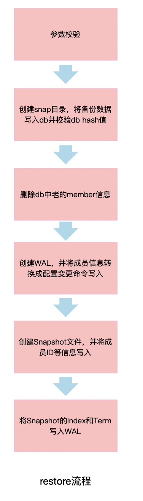
首先，它会根据你提供的参数进行一系列校验，检查snapshot的hash值等。如果检查通过的话，会创建snap目录并将snapshot拷贝到v3的db文件，设置consistentIndex值为当前提供的initial-cluster参数中包含的成员数量，并从db中删除老的成员信息。
然后，它会根据你提供的参数信息来构建WAL文件和snap文件。从你提供的配置中来获取peer节点信息，并转换为ConfChangeAddNode类型的ConfChange日志条目写入WAL文件，同时更新commit值，并将term设置为1。
之后snapshot restore会将peer节点作为Voters写入snapshot metadata的ConfState中，并更新Term和Index。snapshot保存后，WAL会随后保存当前snapshot的Term和Index，用于索引snapshot文件。
当每个节点的数据恢复后，我们就可以正常启动节点了。因为restore命令构造了WAL和snapshot，因此节点启动相当于一个正常集群进行重启。在启动Raft模块时，会通过snapshot的ConfState来更新Raft模块的配置信息，并在应用层apply时会重放从WAL中获取到的ConfChangeAddNode类型的ConfChange日志条目，更新应用层和Raft模块配置。
至此，集群恢复完成。
故障分析
了解完etcd集群成员变更的原理后，我们再回到开篇的问题，不晓得现在你有没有一个大概的思路呢？接下来就让我们运用这节课和之前学习的内容，一起来分析下这个问题。
首先，这个集群初始化时是直接启动的3节点集群，且集群创建至今没有过成员变更。那么当删除数据重启时，异常节点会认为自己是新建集群第一次启动，所以在启动Raft模块时，会将peer节点信息转换成ConfChangeAddNode类型的ConfChange日志条目追加到Raftlog中，然后设置committed Index为投票节点数量。我们是3节点集群，所以此时committed Index设置为3，并设置term为1，然后在本地apply该日志条目，应用初始化配置信息，然后启动etcdserver。
Leader在检测到该节点存活后，会向该节点发送心跳信息，同步日志条目。Leader本地会维护每个peer节点的Match和Next Index，Match表示已经同步到该节点的日志条目Index，Next表示下一次要同步的Index。
当Leader向Follower节点发送心跳时，会从Match和Leader当前的commit Index中选择一个较小的，伴随心跳消息同步到Follower节点。Follower节点在收到Leader的commit Index时，会更新自己本地的commit Index。
但Follower节点发现该commit Index比自己当前最新日志的Index还要新（按照我们之前的分析，异常节点当前最新的Index为3（日志也证明了这一点），而Leader发送的commit Index是之前节点正常时的commit值，肯定比3这个值要大），便认为raftlog肯定有损坏或者丢失，于是异常节点就会直接panic退出。最后就出现了我们之前看到的不停重启不停panic的现象。
那么为什么执行member remove操作会报没有Leader呢？我们之前提到过，执行成员变更前会进行一系列前置检查（如下图）。在移除节点时，etcd首先会检查移除该节点后剩余的活跃节点是否满足集群法定票数要求。满足要求后，会检查该节点是否宕机（连接不通）。如果是宕机节点，则可以直接移除。
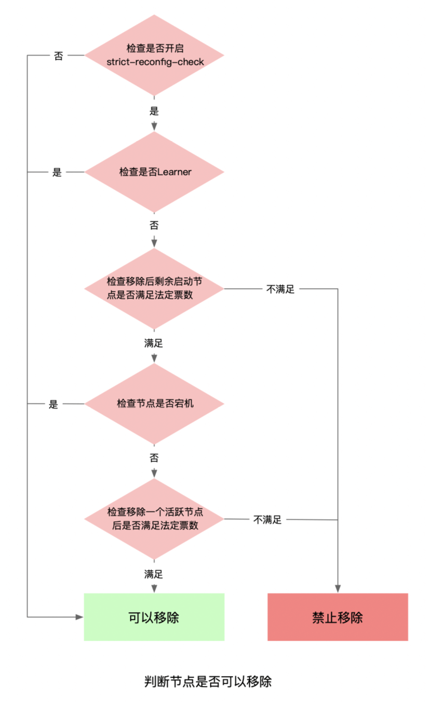
但由于我们的节点不停重启，每次重启建立peer连接时会激活节点状态，因此没有统计到宕机的节点中。
最后会统计集群中当前可用的节点，该统计方式要求节点必须在5s前激活，因为节点刚启动5s内认为etcd还没有ready，所以不会统计到可用节点中，即当前可用节点数为2。
然后再判断移除一个可用节点后，当前剩余节点是否满足法定票数要求，我们这个案例中为 2 - 1 < 1+ ((3-1)/2)，不满足法定票数要求，所以服务端会返回ErrUnhealthy报错给客户端（我们这个场景其实是由于etcd针对不可用节点的判断没有排除异常的要移除节点导致）。
由于用户当时使用的是etcdctl v2的API，所以客户端最终会将该错误转换成http code 503，客户端识别到503，就会认为当前集群没Leader（这里v2客户端代码对v3 grpc错误码转换判断不是很准确，有误导性），打印我们之前看到的no Leader错误。
最后一个问题，为什么后来panic节点会自动恢复呢？答案是中间由于IO高负载，发生了心跳超时，造成了Leader选举。
新的Leader选举出来后，会重置自己维护的peer节点的Match Index为0，因此发送给异常Follower心跳时带上的commit Index即为0。所以Follower不会再因为commit Index小于自己最新日志而panic。而Leader探测到Follower的Index和自己差距太大后，就发送snapshot给Follower，Follower接收snapshot后恢复正常。
这个case了解原理后，如果希望快速恢复的话也很简单：完全停掉异常Follower节点后，再执行member remove，然后将节点移除，清理数据再重新加入到集群（或者通过move-leader命令手动触发一次Leader切换，但该方式比较trick，并不通用）。
以上就是这个案例的完整分析，希望通过这个case，能让你认识到规范变更的重要性，在不了解原理的情况下，一定要按照官方文档来操作，不要凭感觉操作。
小结
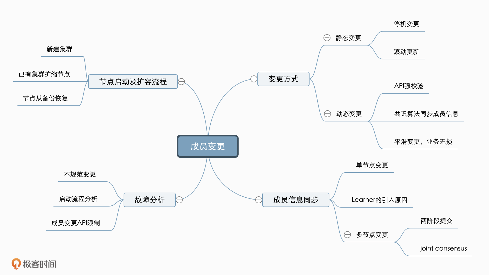
最后我们来小结下今天的内容，今天我从一个诡异的成员变更故障案例讲起，为你介绍了etcd实现成员变更的原理，分别为你分析了etcd成员变更在Raft层和应用层的实现，并分析了各个实现方案的优缺点。
其次我带你过了一遍etcd成员变更的演进方案：从只支持Member变更到支持Learner节点（non-voting Member），Raft层从只支持单节点变更到支持多节点变更。成员变更的方案越来越完善、稳定，运维人员在变更期间发生故障的概率也越来越低。
之后我以新增节点为例，深入为你分析了从配置提交到节点启动对外服务的完整流程，以及新集群启动和恢复过程中涉及到的成员变更原理。
最后，通过我们这节课和之前的课程学到的原理，我和你一步一步深入分析了下开篇的故障问题可能发生的原因以及快速恢复的方法。希望通过这节课，让你对etcd成员变更方案有一个深入的了解，在遇到类似的问题时能够快速定位问题并解决，提升业务的稳定性。
思考题
在组建etcd集群时，你是习惯于在initial-cluster参数中直接指定所有节点的配置启动，还是说先指定一个节点配置启动，然后再将剩余节点用添加到已存在集群的方式依次加入到集群中呢？这两种方式各存在哪些优缺点？欢迎把你的经验和想法分享到留言区，我们可以一起讨论下。
感谢你的阅读，如果你认为这节课的内容有所收获，也欢迎把它分享给更多的朋友一起阅读。
© 2019 - 2023 Liangliang Lee. Powered by gin and hexo-theme-book.